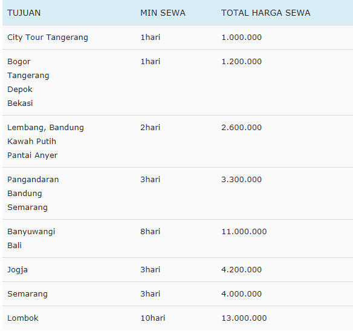

Harga Sewa Elf Short di Tangerang, 11 – 15 seat.:

Keterangan:
Waktu sewa Elf keluar kota maksimal 18 jam perjalanan, pada hari yang sama. (tidak lebih dari jam 18 malam).
Waktu sewa Elf dalam kota maksimal 16 jam perjalanan, pada hari yang sama. (tidak lebih dari jam 16 malam).
Harga sewa termasuk, Elf, Sopir dan Solar.
Tidak termasuk biaya Tol, Parkir dan Tip Sopir (Sukarela).
Booking Elf akan dinyatakan resmi jika sudah membayar sejumlah DP, minimal 30% dari harga sewa Elf
Harga sewa Elf pariwisata di Tangerang akan berbeda pada tanggal tertentu.
Harga bisa jadi lebih murah / lebih mahal, menyesuaikan berbagai faktor.